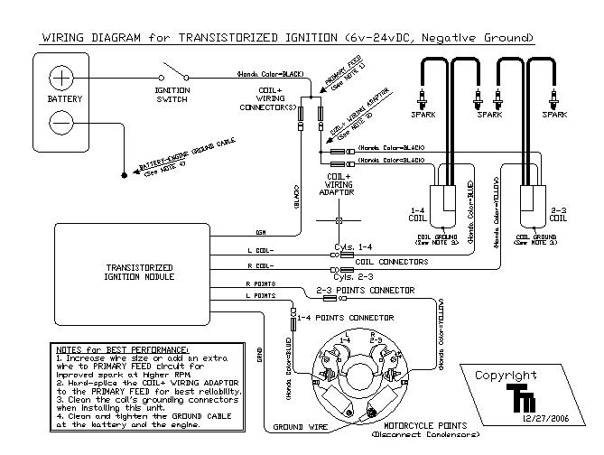

Transistorized Ignition for Dual Points: $80.00
Transistorized Ignition for Dual Points-type ignitions, 6 to 24 volts,
negative ground (not for magnetos).
If you would like one of these units, please e-mail to:
SOHC4shop@gmail.com for
details of how to order one.
This fits, among others, the following motorcycles with points:
Honda:
CB750K0-K8, CB750F0-F8, 1969-1978
CB500 Fours, 1971-1973
CB550 Fours, 1972-1978
CB250 and CB350 Fours, 1972-1976
CB400F Fours, 1974-1978
CB450 and CB500 Twins, 1964-1976
CB350, CB360 Twins, 1968-1976
CB72, CB77, CL72, CB77 250cc Hawks and 305cc SuperHawks
GL1000, GL1100 Gold Wings
Kawasaki:
KZ650, KZ750, early KZ1000 Fours (with points).
Z1 900cc Fours
650 Twins with points.
350 and 400 twins with points.
Yamaha:
RD350, RD400 twins.
XS650 Twins with points.
(For 750 Triple, see Triple Ignition).
Suzuki:
GT500 Titan
250 Hustler (with points-and-coils).
(For GT750/550/380 Triples, see Triple Ignition).

This
Electronic Ignition for your motorcycle (and for old cars or
boats, contact me for those details) uses your existing points to
trigger transistors that switch the coils in the bike's ignition: in
effect, it is like a "points amplifier". This stops all the arcing and
pitting on the points, so they do not shift in timing nor wear their
contacts, giving you many years of trouble-free riding. And, should this
device ever fail, it can be simply unplugged and your points plugged
back in, so you can ride on. They are highly reliable units, and have
been around since the 1970s: this unit comes with a 5 year, 100%
replacement-or-repair warranty.
Both 4-cylinder and dual-point 2-cylinder bikes use the same unit.
Literature accompanies each unit to aid with installation, which is a
simple, plug-in assembly on SOHC4 bike and Honda Twins. Installation is
similar on the Kawasaki, Suzuki, and Yamaha dual-point Fours and Twins.
Installation schematic, 4-cylinder:
Installation takes about 1 hour and consists of mounting the box first,
usually under or behind the battery tray, with a couple of nylon
Ty-Wraps. The wires are then routed to the coils and the points
connections, and this unit is specifically designed to PLUG IN on the
Honda, Kawasaki, and Suzuki Fours and Twins, except for the Green Ground
wire, which must mount to the points plate itself. Extra connectors are
provided in case the bike's aging bullet connectors are worn or
corroded. Timing and points setup remains exactly the same as your stock
settings.
Benefits of using this device include easier starting and less
cold-bloodedness at startup, stronger spark through the entire RPM
range, cleaner spark plugs, and extremely reduced points wear. In most
situations, there is no need to replace your points when installing this
unit, so long as the engine already runs.
The primary advantages of this system:
1. The original dwell is preserved (no other electronic replacement
system provides this feature).
2. The power consumption is only 0.1 amp more than stock, max. In
comparison: the typical Dyna S uses a little over 1 amp extra current,
as do other similar "electronic trigger" systems.
3. Points and condensors stay in place: this provides 100% backup if the
electronics should ever fail. You can unplug the 4 wires to the points
and coils, plug the points back into the coils, and hit the road again
in (literally) about 2 minutes, even on a hot bike.
4. This unit has a 5-year, 100% warranty: if it fails, I'll fix it for
return postage only.
Delivery: stock to 2 weeks. If a customized version is desired, such as
longer wires or an added "Security Switch" option, then contact
SOHC4shop@gmail.com
for details.